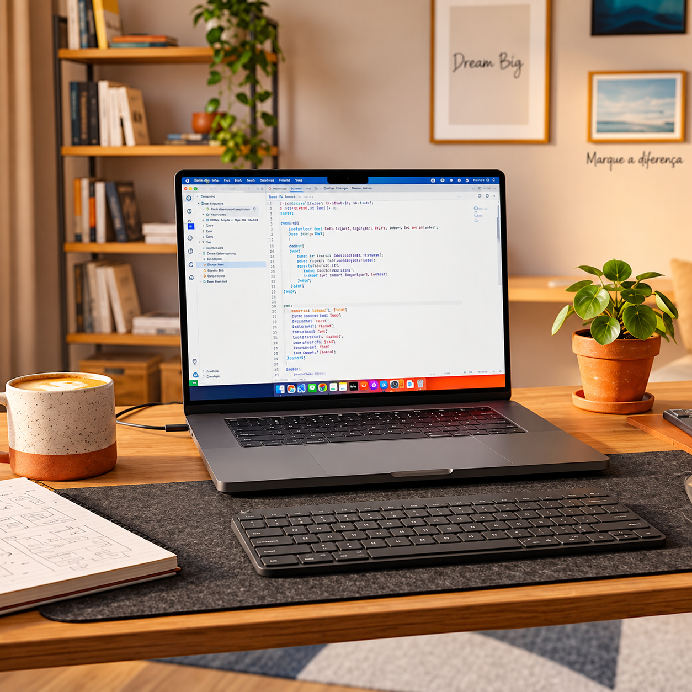
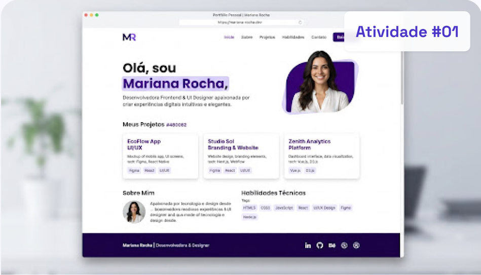
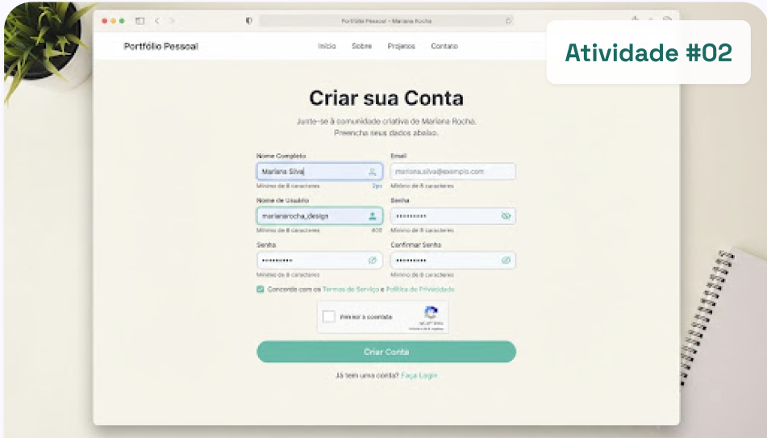
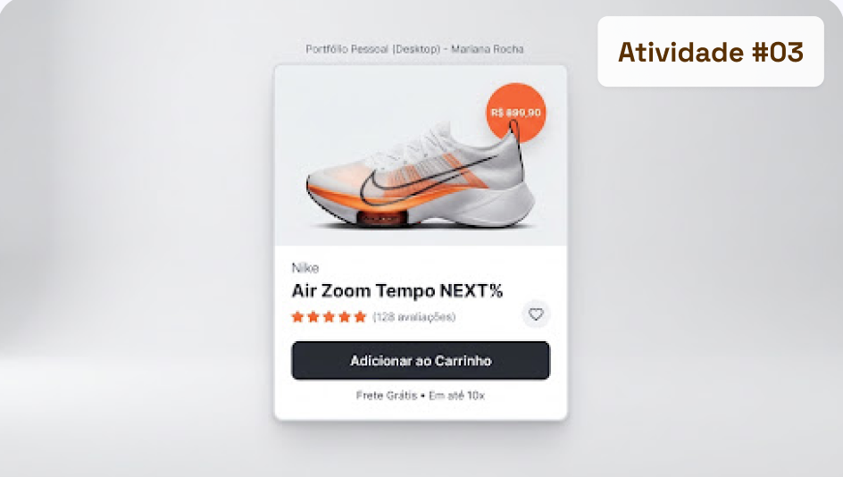

HTML
Fase 1
HTML Semântico
Uso de tags corretas como main, article, estruturação de cabeçalhos e formulários acessíveis com labels claras e semântica pura.
Esta landing page é um projeto desenvolvido em sala
com os melhores alunos do melhor curso do Senac-DF,
utilizando tecnologias frontend HTML, CSS e JavaScript.
Cada linha reflete minha paixão por continuar ensinando.
FOCO ATUAL Flexbox, Grid & Semântica
Construindo consistência diária no código e refinando alinhamentos visuais na tela.

Passo a passo, consolidando as bases web para construir páginas acessíveis e agradáveis.
Uso de tags corretas como main, article, estruturação de cabeçalhos e formulários acessíveis com labels claras e semântica pura.
Aplicação de cores, fontes, espaçamentos, bordas e sombras para criar interfaces organizadas e visualmente agradáveis.
Organização dos elementos utilizando Flexbox, alinhamentos, distribuição de espaços e construção de layouts flexíveis.
Estudante Front-End Júnior
Resultados reais dos exercícios propostos neste primeiro módulo de aprendizado.

Meu primeiro desafio individual: estruturação semântica limpa, hierarquia de títulos rigorosa e estilização customizada sem frameworks.

Campos estilizados com foco explícito em usabilidade, contraste de cores e validações visuais com mensagens nativas do navegador.

Exercício prático de hierarquia visual, espaçamento de elementos internos e sombras sutis utilizando as propriedades de Flexbox.
O kit básico que me acompanha em todas as sessões de estudo e codificação.
Editor principal
Extensões Live Server & PrettierCommits e branches
Controle de versão no terminalMedidas & layout
Inspeção de espaçamentos e coresInspecionar CSS
Depuração e testes de box-modelQuer trocar uma ideia sobre os estudos de front-end, dar dicas para uma iniciante ou simplesmente acompanhar meus projetos?
lukascarneirotavares20@gmail.com
enviar e-mail ↗Meu perfil profissional
conectar ↗jocieljesus
seguir perfil ↗